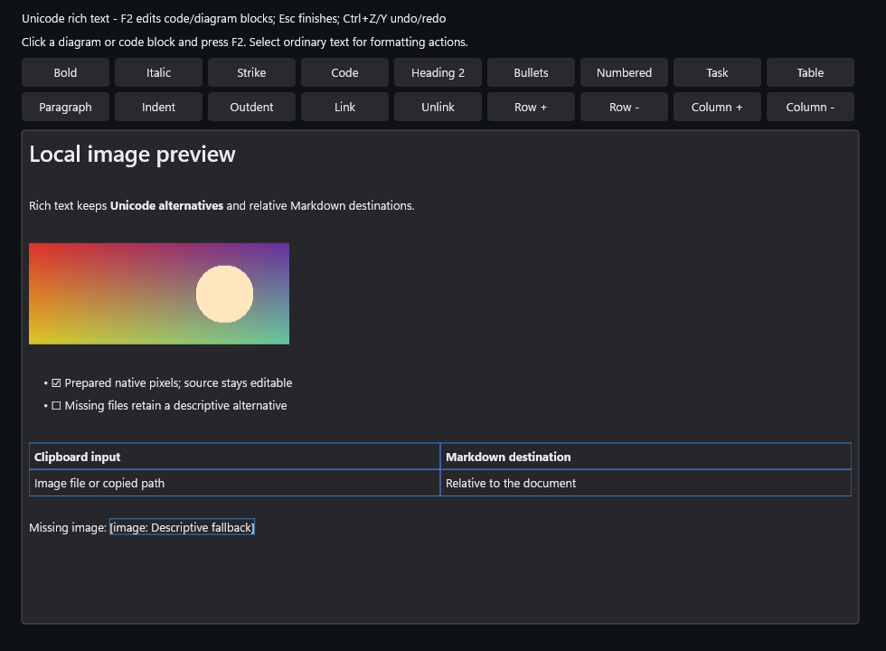

code, | Language | Text |
|---|---|
| Greek | β |
| Japanese | 日本語 😀 |

Inline E = mc² shares the baseline. Display fractions and matrices reserve their full height.
State and class diagrams inherit native text, selection and theme colors.
Design proposal preview; actual native output is generated by gallery.ps1.A link with style gains its underline on hover or a focused caret.
Inactive paragraphs use subdued ink.
Search highlights preserve source and selection.
Optional appearance proposal; the gallery contains its actual native capture.